FORECAST_AND_SARIMA หน้า 14–52 และควิซ 7
ข้อมูลไฟฟ้าใน Lesson 7 หลัง log และ difference แล้วยังมี ACF สูงที่ lag 12, 24, 36 ARIMA ธรรมดาจัดการ pattern ที่ "กระโดด" ทีละ 12 ไม่ได้ บทนี้เพิ่มส่วน seasonal เข้าไป หลักคิดสรุปได้ประโยคเดียว คือ seasonal "เหมือนเดิม" ทุกอย่าง แต่ค่าที่เกี่ยวข้องกันห่างกัน s ไม่ใช่ห่างกัน 11 บทนี้เริ่มจาก pure seasonal คือ MA(Q)ₛ และ AR(P)ₛ ซึ่งเปลี่ยน t − 1 เป็น t − s และ B เป็น Bˢ ตาราง ACF/PACF แบบ seasonal จึงมีรูปแบบเดิมทุกอย่าง แต่เกิดที่ lag s, 2s, 3s ต่อด้วย multiplicative ARMA(p,q)×(P,Q)ₛ ที่คูณพหุนามสองชุดจนเกิด "ตะเกียบ" ข้าง lag seasonal แล้วรวมเป็น full model \(\phi(B)\Phi_P(B^s)\nabla^d\nabla_s^DX_t=\theta(B)\Theta_Q(B^s)w_t\) ซึ่งเป็น "โมเดลสุดท้าย" ของ Box-Jenkins สุดท้ายใช้กับข้อมูลจริงสองชุด คือ Denver boardings และ US milk
เรื่องที่ระบุว่าเกี่ยวกับข้อสอบและควิซในบทนี้มีดังนี้
ส่วนนี้คือ Section 3.9 ของหนังสือ สอนครั้งแรกใน Class 8 ด้วยการเขียนมือทั้งหมดเพราะ "ลืมเอาสไลด์มา" แล้วทวนอีกครั้งใน Class 9-1 บนกระดาน และใช้สไลด์ชุดนี้กับข้อมูลจริงใน Class 9-2 ข้อมูลรายเดือนมักมี autocorrelation สูงที่ lag เป็นพหุคูณของ s = 12 เพราะ "January observations tend to be alike across years" เช่น ยอดขายเดือนธันวาคมปีนี้ใกล้กับธันวาคมปีก่อนมากกว่าพฤศจิกายนปีนี้ ข้อมูลรายไตรมาสใช้ s = 4 และเรียก s ว่า seasonal lag หรือ seasonal index11 ความไม่นิ่งหลายครั้งเกิดจาก periodic component ซ้อนอยู่ ต้องแยกส่วน seasonal ออกก่อนฟิต ARIMA และบางข้อมูลส่วน seasonal เองก็มีลักษณะไม่นิ่งแบบพหุนาม ต้องใช้ seasonal differencing \(\nabla_sX_t=X_t-X_{t-s}=(1-B^s)X_t\) เช่น \(\nabla_{12}\) ของมกราคม 2005 คือมกราคม 2005 ลบมกราคม 2004 ซึ่งตัดผลของเดือนที่ซ้ำทุกปีออก
MA(Q)ₛ คือ \(X_t=w_t+\Theta_1w_{t-s}+\Theta_2w_{t-2s}+\dots+\Theta_Qw_{t-Qs}\) Θ ใหญ่ "คือเหมือนกัน" กับ θ แค่ใช้ตัวใหญ่เพื่อแยก seasonal กับ non-seasonal Q ใหญ่คือจำนวน Θ และค่าที่เกี่ยวข้องกระโดดห่างกัน s12 เขียนด้วย B ได้ \(\Theta_Q(B^s)=1+\Theta_1B^s+\dots+\Theta_QB^{Qs}\) เช่น MA(2)₄ คือ \(X_t=(1+\Theta_1B^4+\Theta_2B^8)w_t\) ตัวอย่างที่ง่ายที่สุดคือ \(X_t=w_t+\Theta w_{t-12}\) เทียบกับ MA(1) \(X_t=w_t+\theta w_{t-1}\) จุดที่ต้องระวังคือ \(w_{t-12}\) ไม่ใช่ \(w_{t-1}\)13 MA(1)₁₂ คือ MA(12) ที่ θ₁ ถึง θ₁₁ เป็นศูนย์และ θ₁₂ = Θ จึงใช้เครื่องมือเดิมทั้งหมดได้ ใน R จึง simulate ด้วย ma = c(rep(0,11), 0.9)14
\(\mathrm{Var}(w_t+\Theta w_{t-12})=\sigma^2(1+\Theta^2)\)
เช่น \(\mathrm{Cov}(w_t+\Theta w_{t-12},\,w_{t+1}+\Theta w_{t-11})\) ดัชนี \(t, t-12\) กับ \(t+1, t-11\) "ไม่ชนกันเลย" จึงเป็น 0
\(\mathrm{Cov}(w_t+\Theta w_{t-12},\,w_{t+12}+\Theta w_t)\) ชนกันที่ \(w_t\) ได้ \(\Theta\sigma^2\)
\(\rho_{12}=\Theta/(1+\Theta^2)\) และ ρ อื่นทุกตัวเป็น 0 เทียบกับ MA(1): \(\rho_1=\theta/(1+\theta^2)\)
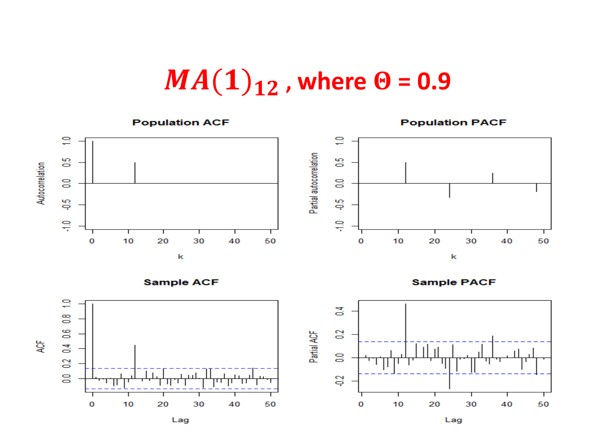
population ACF มีแท่งเดียวที่ lag 12 = 0.497 ส่วน population PACF มีค่าที่ lag 12, 24, 36, 48 = 0.497, −0.328, 0.243, −0.191 สลับเครื่องหมายและลดลง ขนาดเท่ากับ PACF ของ MA(1) θ = −0.9 ใน Lesson 6 (0.497, 0.328, 0.243, 0.191) ต่างที่เครื่องหมายสลับบวกลบเพราะ Θ เป็นบวก และย้ายจาก lag 1, 2, 3, 4 ไป 12, 24, 36, 48 sample จาก arima.sim(..., n = 200) มีรูปแบบเดียวกันแต่มีแท่งเล็ก ๆ ที่ lag อื่นด้วย ข้อสรุปบนสไลด์ 20 คือ population ACF และ PACF มีรูปแบบเดียวกับ MA(1) แต่เกิดที่ seasonal lag ACF ไม่เป็นศูนย์เฉพาะ lag 12 แปลว่าค่าที่ห่างกัน 12 หน่วยสัมพันธ์กัน ค่าอื่นไม่สัมพันธ์ และ PACF ลดลงตาม lag 12, 24, 36, …
\(\Theta_Q(B^s)\) เรียกว่า seasonal MA characteristic operator เป็นพหุนามดีกรี Qs MA(Q)ₛ invertible เมื่อรากทั้ง Qs ตัวมีค่าสัมบูรณ์หรือ modulus เกิน 1 เช่น MA(1)₁₂ \(1+\Theta x^{12}=0\) ได้ \(|x|^{12}=1/|\Theta|\) รากทุกตัวมี modulus \(|\Theta|^{-1/12}\) ซึ่งเกิน 1 เมื่อ |Θ| < 1 เงื่อนไขจึงเหมือน MA(1) แบบทดสอบในห้อง17 ฝึกหาว่า ACF ไม่เป็นศูนย์ที่ lag ใด
วิธีคิดคือ lag ที่ไม่เป็นศูนย์ของ MA(Q)ₛ คือ s, 2s, …, Qs
AR(P)ₛ เดาได้จากรูปแบบเดียวกัน19 \(X_t=\Phi_1X_{t-s}+\Phi_2X_{t-2s}+\dots+\Phi_PX_{t-Ps}+w_t\) Φ ใหญ่มี P ตัว และ \(\Phi_P(B^s)=1-\Phi_1B^s-\dots-\Phi_PB^{Ps}\) การคูณด้วย Bˢ เลื่อน t เป็น t − s20 เช่น AR(2)₁₂ คือ \(X_t=\Phi_1X_{t-12}+\Phi_2X_{t-24}+w_t\) หรือ \((1-\Phi_1B^{12}-\Phi_2B^{24})X_t=w_t\) AR(1)₁₂ \(X_t=\Phi X_{t-12}+w_t\) คือ AR(12) ที่ φ₁ ถึง φ₁₁ เป็นศูนย์และ φ₁₂ = Φ เหมือน AR(1) ตรงที่นิ่งก็ต่อเมื่อ −1 < Φ < 1 ความหมายคือ ยอดขายเดือนนี้ขึ้นกับเดือนเดียวกันของปีก่อน ไม่ขึ้นกับเดือนก่อนหน้า
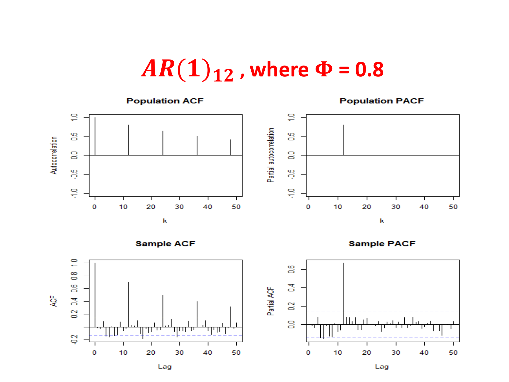
population ACF มีค่าที่ lag 12, 24, 36, 48 = 0.8, 0.64, 0.512, 0.410 คือ \(\Phi^{h/12}\) ตามที่หนังสือเขียน21 และ lag อื่นเป็นศูนย์ เช่น lag 1 = 0 population PACF มีแท่งเดียวที่ lag 12 = 0.8 sample ACF จาก n = 200 ลดลงตาม lag 12, 24, 36 ชัดเจน ข้อสรุปบนสไลด์ 25 คือ ACF ลดลงช้าตาม seasonal lag 12, 24, 36, 48 ส่วน PACF ไม่เป็นศูนย์ที่ lag 12 แล้วเป็นศูนย์ เป็นรูปแบบเดียวกับ AR(1) แค่ย้ายตำแหน่ง หัวสไลด์หน้านั้นพิมพ์ว่า Θ = 0.8 แต่ควรเป็น Φ = 0.8 ตามหน้าก่อน
\(\Phi_P(B^s)\) เรียกว่า seasonal AR characteristic operator เป็นพหุนามดีกรี Ps AR(P)ₛ causal (นิ่ง) เมื่อรากทั้ง Ps ตัวมีค่าสัมบูรณ์หรือ modulus เกิน 1 แบบฝึกในห้อง: AR(4)₄ มี PACF ไม่เป็นศูนย์ที่ 4, 8, 12, 16 แล้วเป็นศูนย์ และ ACF tail off ที่ 4, 8, 12, 16, 20, 24, …22
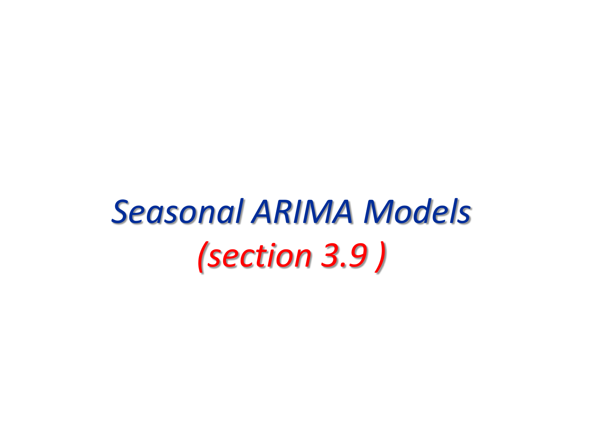
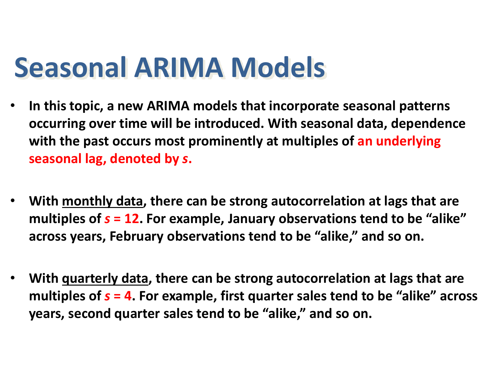
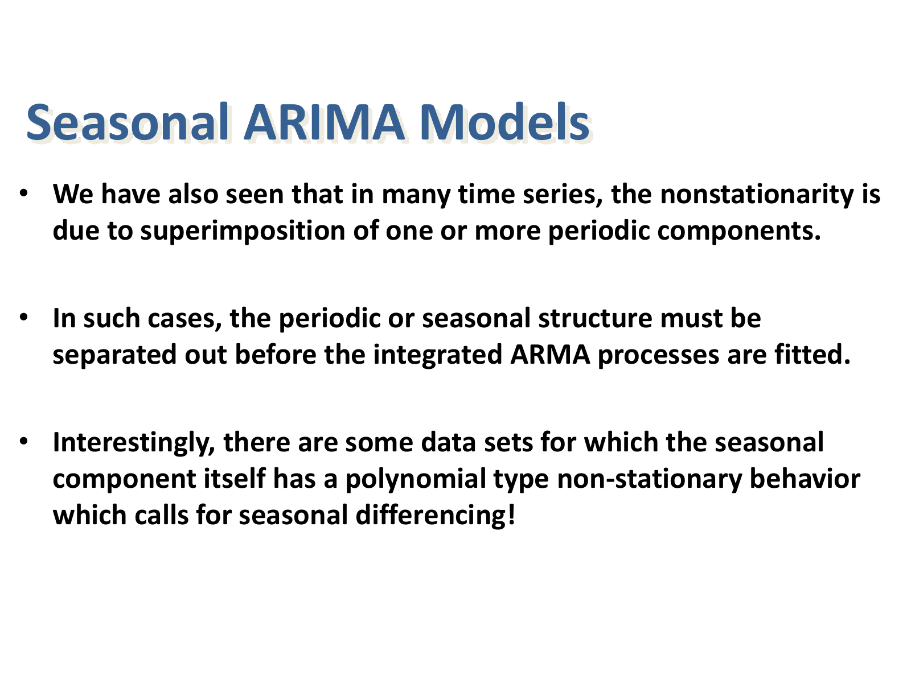
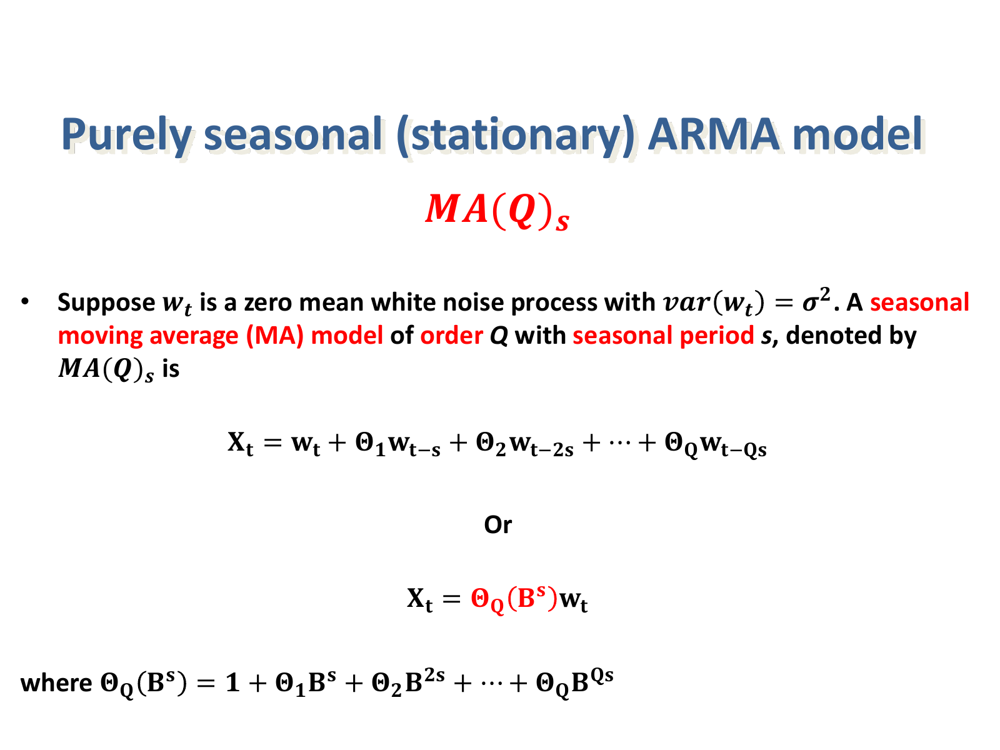
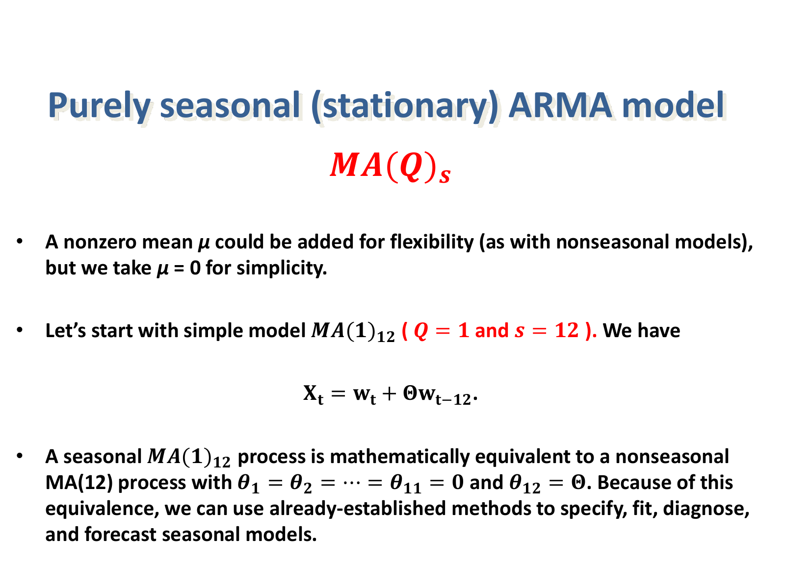
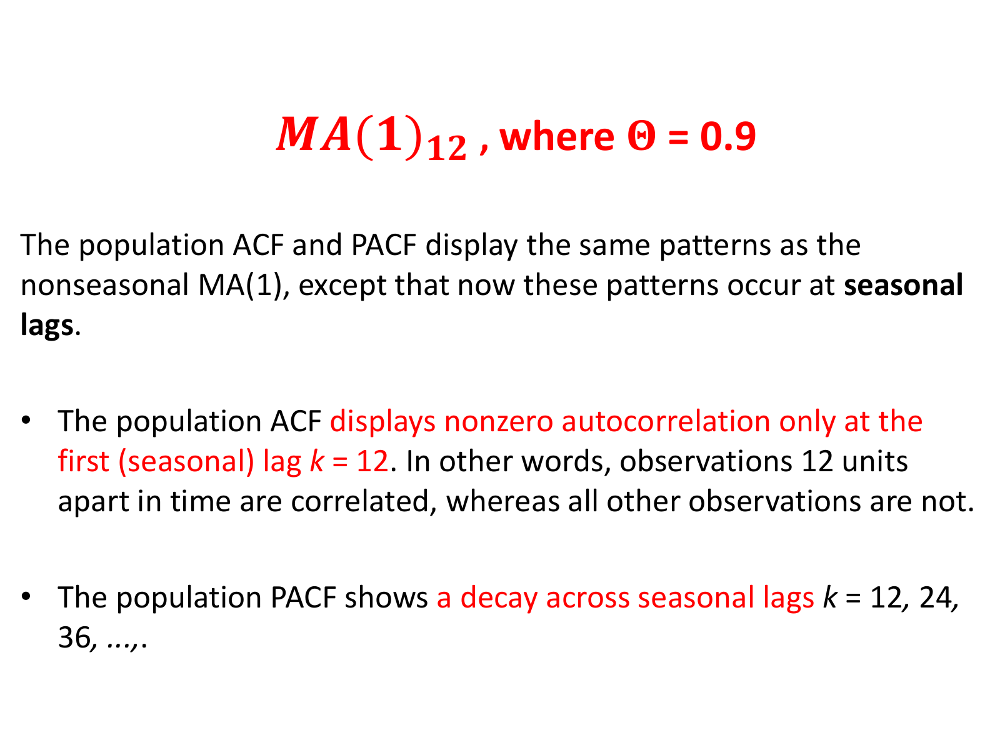
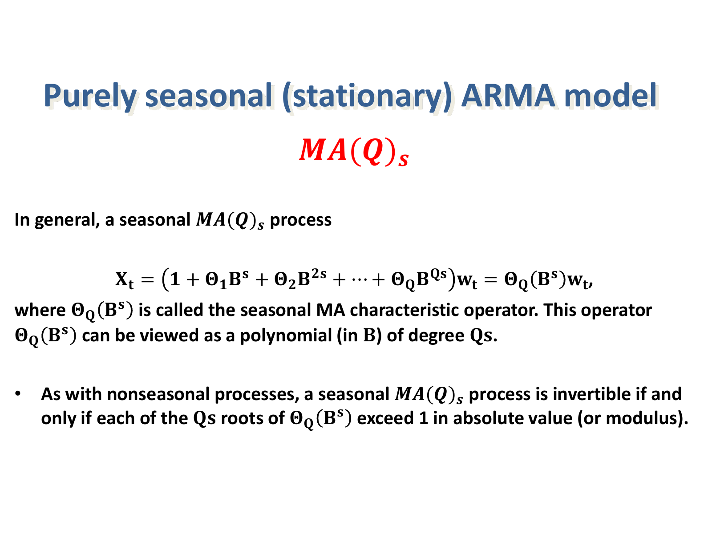
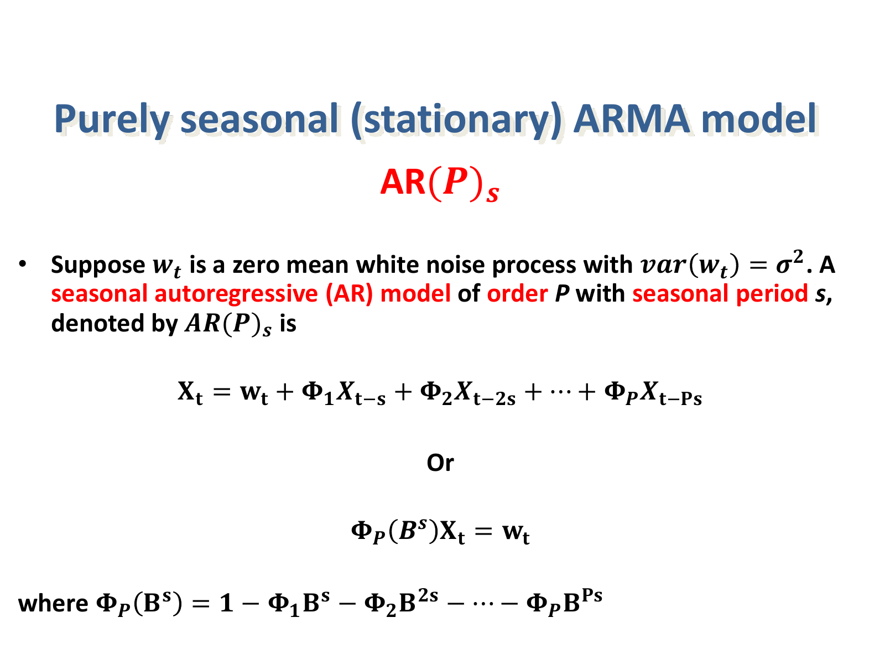
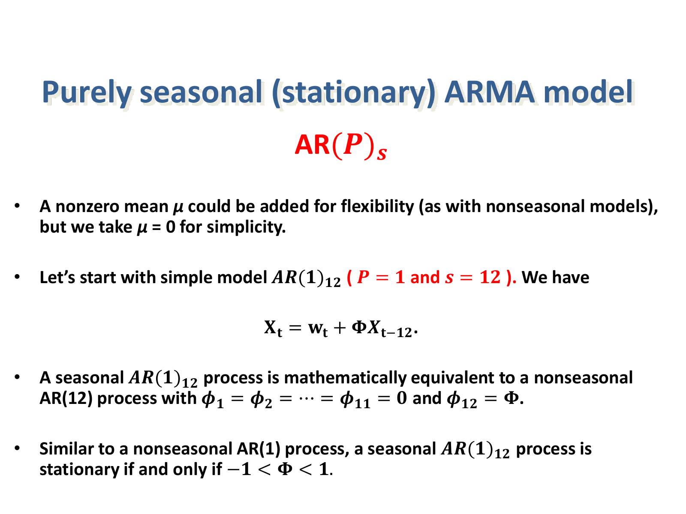
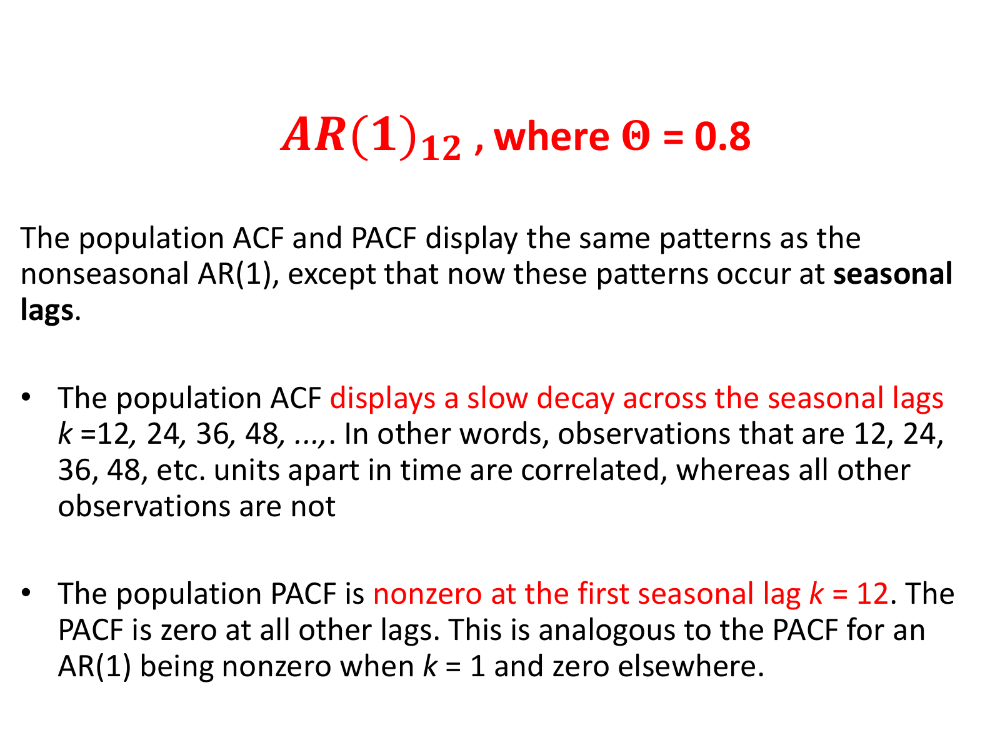
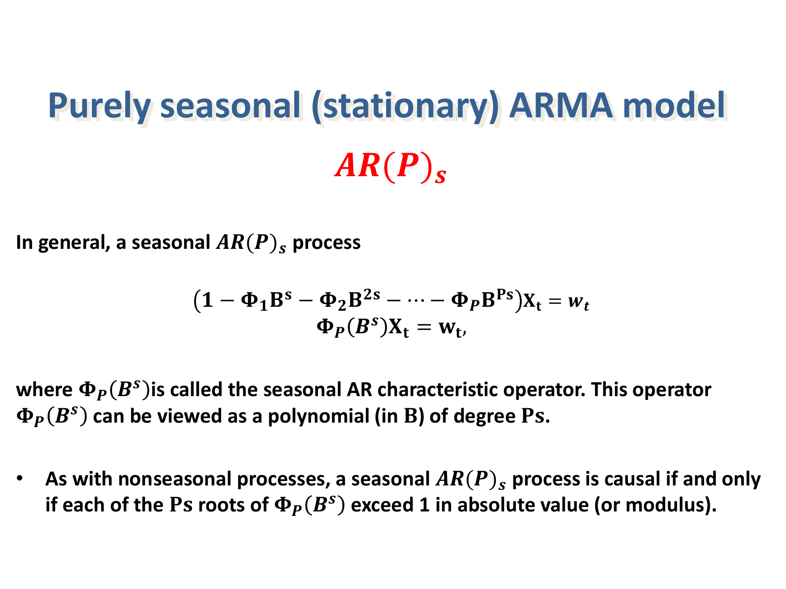
รวมสองส่วนเป็น \(\Phi_P(B^s)X_t=\Theta_Q(B^s)w_t\) เรียกว่า SARMA(P,Q)ₛ23 เป็นคู่ของ ARMA(p,q) ที่ autocorrelation ไม่เป็นศูนย์เฉพาะที่ lag s, 2s, 3s, … จุดที่ต้องระวังคือ t − 1 กลายเป็น t − s และ B กลายเป็น Bˢ24 ส่วนเงื่อนไขก็ตรงกัน คือ causal เมื่อรากของ \(\Phi_P(B^s)\) เกิน 1 ทุกตัว invertible เมื่อรากของ \(\Theta_Q(B^s)\) เกิน 1 ทุกตัว และ ARMA(P,Q)ₛ เทียบเท่า ARMA(Ps, Qs) ธรรมดาที่ \(\phi_s=\Phi_1,\phi_{2s}=\Phi_2,\dots,\phi_{Ps}=\Phi_P\) และ \(\theta_s=\Theta_1,\dots,\theta_{Qs}=\Theta_Q\) ส่วน φ, θ อื่นเป็นศูนย์ เช่น ARMA(1,1)₄ คือ ARMA(4,4) ที่มีแค่ φ₄ กับ θ₄ หน้าสุดท้ายของไฟล์ (หน้า 52) ทวนเรื่องเดียวกันอีกครั้ง ตัวอย่าง AR(2)₃ คือ AR(6) ที่มีแค่ φ₃ = Φ₁ และ φ₆ = Φ₂ ซึ่งใช้ใน R เป็น ar = c(0,0,Φ1,0,0,Φ2)
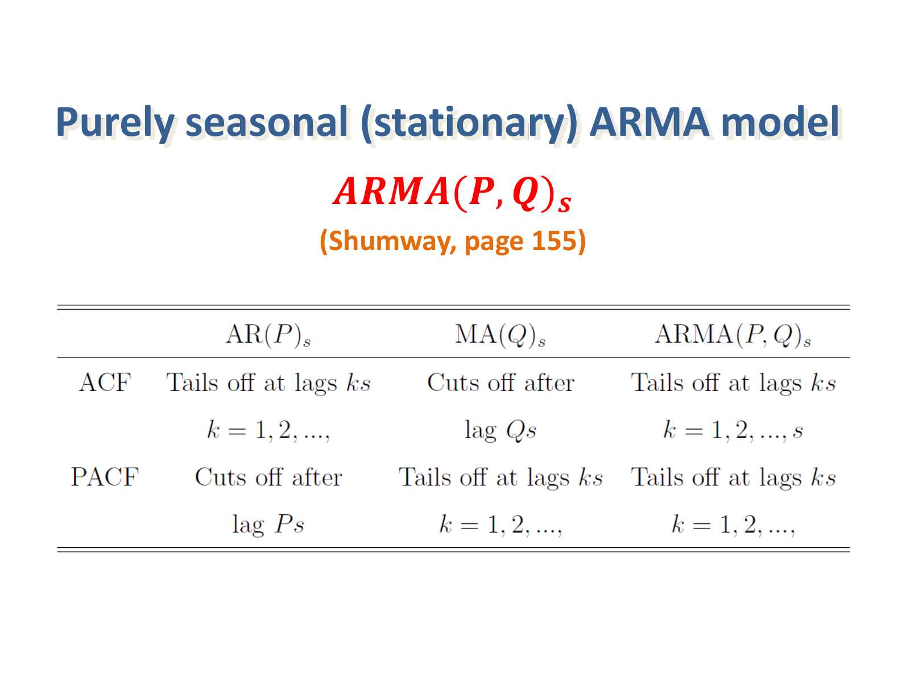
ตารางนี้คือควิซ 7 ซึ่งเขียนบนกระดานใน Class 9-125 AR(P)ₛ มี ACF tail off ที่ lag ks และ PACF ตัดหลัง lag Ps MA(Q)ₛ กลับกัน คือ ACF ตัดหลัง lag Qs และ PACF tail off ส่วน ARMA(P,Q)ₛ tail off ทั้งคู่ lag ที่ไม่ใช่พหุคูณของ s เป็นศูนย์ทั้งหมดในโมเดล pure seasonal และ tail off อาจลงแบบบวกทั้งหมดหรือสลับบวกลบก็ได้26
| AR(P)ₛ | MA(Q)ₛ | ARMA(P,Q)ₛ | |
|---|---|---|---|
| ACF | tail off ที่ lag ks, k = 1, 2, … | ตัดหลัง lag Qs (ไม่เป็นศูนย์ที่ s, 2s, …, Qs) | tail off ที่ lag ks |
| PACF | ตัดหลัง lag Ps (ไม่เป็นศูนย์ที่ s, 2s, …, Ps) | tail off ที่ lag ks | tail off ที่ lag ks |
เทียบกับ non-seasonal: MA(q) ไม่เป็นศูนย์ที่ 1, …, q ส่วน MA(Q)ₛ ไม่เป็นศูนย์ที่ s, …, Qs และ PACF ของ MA(Q)ₛ tail off โดยแท่งกระจายห่างกัน s27
\(X_t=\Phi_1X_{t-3}+\Phi_2X_{t-6}+w_t\) ACF: ไม่เป็นศูนย์เฉพาะ lag 3, 6, 9, 12, … และค่อย ๆ ลด (tail off) lag อื่นเป็นศูนย์ PACF: ไม่เป็นศูนย์ที่ lag 3 และ 6 แล้วเป็นศูนย์หลัง lag 6 ตัวอย่าง Φ = (0.5, 0.3): ACF ที่ 3, 6, 9, 12 = 0.714, 0.657, 0.543, 0.469 และ PACF ที่ 3, 6, 9 = 0.714, 0.3, 0
ACF tail off ที่ lag 2, 4, 6, 8, … PACF ไม่เป็นศูนย์ที่ lag 2, 4, 6, 8, 10 แล้วตัดหลัง lag 10 lag คี่เป็นศูนย์ทั้งหมด
ACF ไม่เป็นศูนย์ที่ lag 4 และ 8 แล้วตัดหลัง lag 8 PACF tail off ที่ lag 4, 8, 12, 16, …
ACF ไม่เป็นศูนย์ที่ lag 2, 4, 6, 8 แล้วตัดหลัง lag 8 PACF tail off ที่ lag 2, 4, 6, 8, 10, …
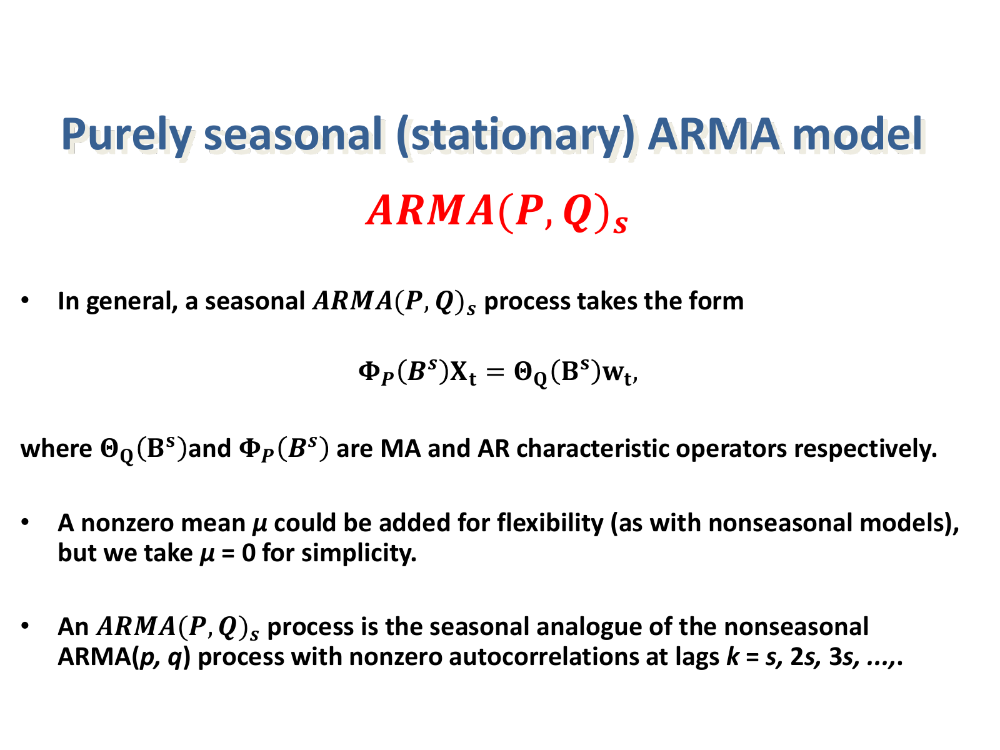
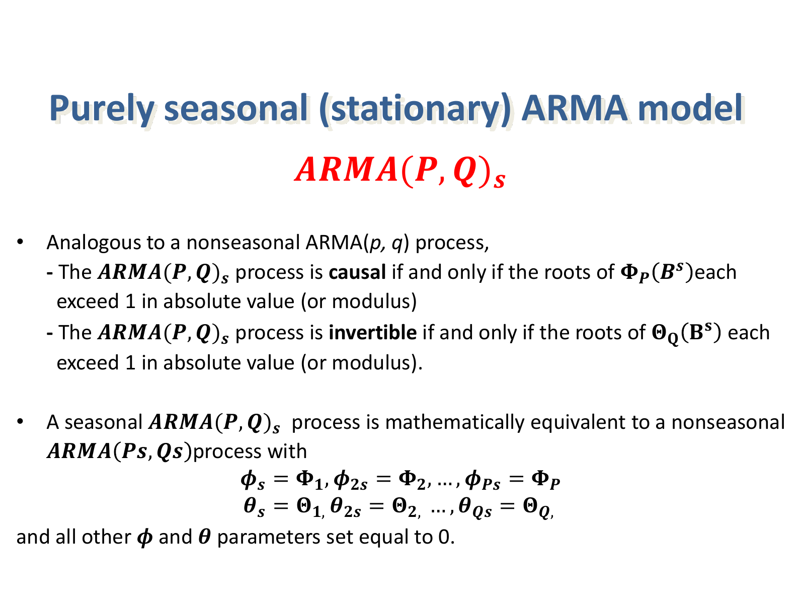
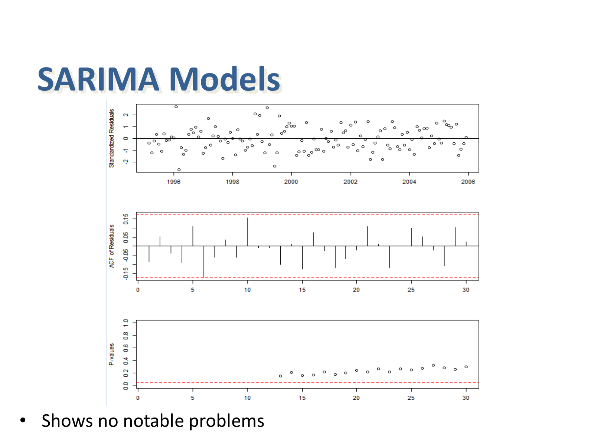
ข้อมูลจริงมักมีทั้งความสัมพันธ์ระยะสั้น (lag 1, 2) และระยะ seasonal (lag 12) จึงคูณพหุนามสองชุดเข้าด้วยกันเป็น \(\phi(B)\Phi_P(B^s)X_t=\theta(B)\Theta_Q(B^s)w_t\) เรียกว่า ARMA(p,q)×(P,Q)ₛ ใน R เขียน order = c(p,0,q), seasonal = list(order = c(P,0,Q), period = s) ต้องแปลงชื่อให้เป็น เช่น MA(1)×MA(1)₁₂ = ARIMA(0,0,1)×(0,0,1)₁₂ และ MA(1)×AR(1)₁₂ = ARIMA(0,0,1)×(1,0,0)₁₂28
\(X_t=(1+\theta B)(1+\Theta B^{12})w_t=(1+\theta B+\Theta B^{12}+\theta\Theta B^{13})w_t\) จึงเป็น MA(13) ที่มีแค่ θ₁ = θ, θ₁₂ = Θ, θ₁₃ = θΘ
\(\sigma^2(1+\theta^2+\Theta^2+\theta^2\Theta^2)=\sigma^2(1+\theta^2)(1+\Theta^2)\)
จับคู่สัมประสิทธิ์ (1, θ, Θ, θΘ ที่ตำแหน่ง 0, 1, 12, 13) ที่ห่างกัน h: h = 1 ได้ θ + ΘθΘ = θ(1 + Θ²); h = 11 ได้ θ·Θ; h = 12 ได้ Θ + θ·θΘ = Θ(1 + θ²); h = 13 ได้ θΘ
\(\rho_1=\dfrac{\theta}{1+\theta^2}\), \(\rho_{12}=\dfrac{\Theta}{1+\Theta^2}\), \(\rho_{11}=\rho_{13}=\dfrac{\theta\Theta}{(1+\theta^2)(1+\Theta^2)}\) lag อื่นเป็นศูนย์
θ = −0.5, Θ = −0.9: ρ₁ = −0.4, ρ₁₂ = −0.497, ρ₁₁ = ρ₁₃ = 0.45/(1.25 × 1.81) = 0.199 ตรงกับ ARMAacf(ma = c(-0.5, rep(0,10), -0.9, 0.45))
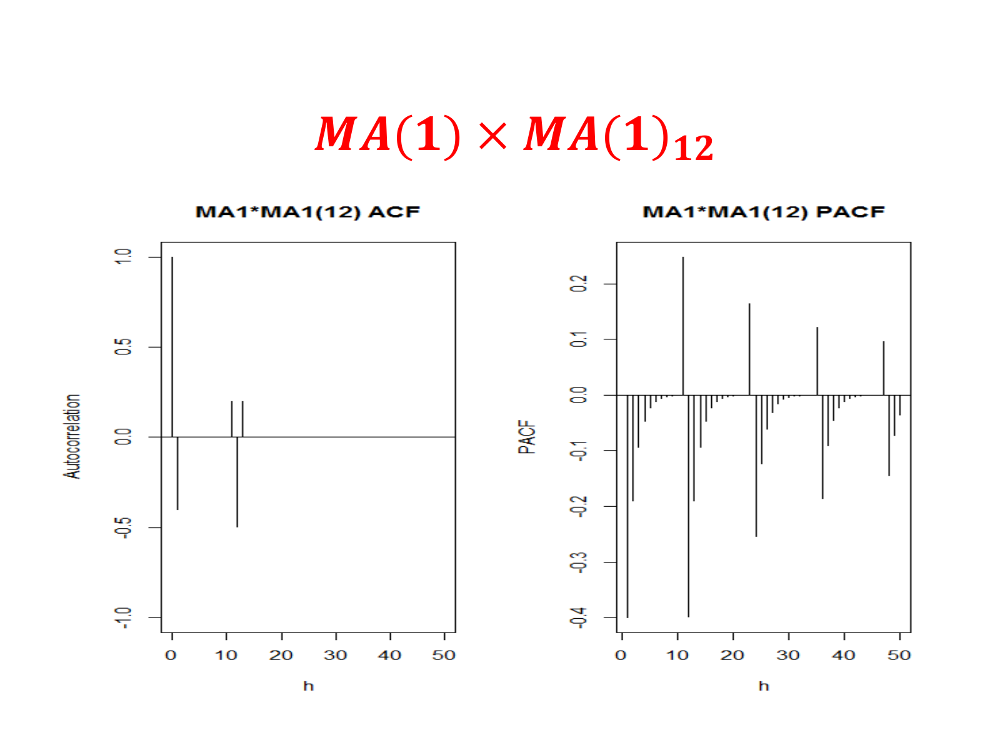
ACF มีแท่งลบที่ lag 1 (−0.4), แท่งลบใหญ่ที่ lag 12 (−0.497) และแท่งบวกเล็กสองแท่งที่ lag 11, 13 (0.199) แล้วเป็นศูนย์ทั้งหมดหลัง lag 13 PACF ไม่ตัด มีค่ารอบ lag 12, 24, 36, 48 ที่ค่อย ๆ เล็กลง ตามตาราง ACF ของ MA ตัด ส่วน PACF tail off
\((1-\Phi B^{12})X_t=(1+\theta B)w_t\) จึงได้ \(X_t=\Phi X_{t-12}+w_t+\theta w_{t-1}\)
lag 1 = −0.4 (จาก MA(1)), lag 12, 24, 36 = 0.9, 0.81, 0.729 (Φ, Φ², Φ³ จาก AR(1)₁₂) และ lag 11, 13 = −0.36, lag 23, 25 = −0.324
−0.36 = 0.9 × (−0.4) และ −0.324 = 0.81 × (−0.4) คือ ρ₁ คูณด้วย Φ^k ข้าง lag 12k ทุกตัว
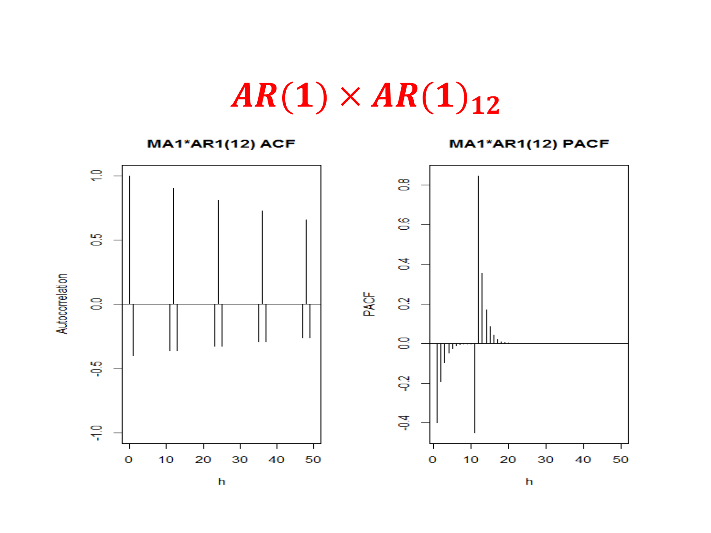
ตัวอย่างบนสไลด์คือ AR(1)×AR(1)₁₂ ACF มีแท่งใหญ่ที่ lag 12, 24, 36, 48 ลดลงช้า และมีแท่งลบรอบ ๆ แต่ละ lag seasonal เพราะ φ ของส่วน non-seasonal ติดลบ ส่วน PACF มีแท่งลบช่วง lag ต้น ๆ แท่งบวกใหญ่ที่ lag 12 และแท่งลบที่ lag 13 แล้วเกือบเป็นศูนย์ ตามทฤษฎี PACF ต้องเป็นศูนย์หลัง lag 13 เพราะ \((1-\phi B)(1-\Phi B^{12})=1-\phi B-\Phi B^{12}+\phi\Phi B^{13}\) คือ AR(13) ที่มีพจน์ที่ lag 1, 12, 13 เท่านั้น เป็นรูปแบบกลับด้านของ MA×MA
เมื่อเติม differencing เข้าไปจะได้โมเดลเต็มที่รวมทุกอย่าง33
\(\phi(B)\,\Phi_P(B^s)\,\nabla^d\,\nabla_s^D\,X_t=\theta(B)\,\Theta_Q(B^s)\,w_t\)
| ส่วน | รูป | ความหมาย |
|---|---|---|
| non-seasonal AR | \(1-\phi_1B-\dots-\phi_pB^p\) | p เล็ก = จำนวน φ |
| seasonal AR | \(1-\Phi_1B^s-\dots-\Phi_PB^{Ps}\) | P ใหญ่ = จำนวน Φ |
| non-seasonal differencing | \((1-B)^d\) | d เล็ก จัดการ trend |
| seasonal differencing | \((1-B^s)^D\) | D ใหญ่ จัดการ seasonal ที่ไม่นิ่ง |
| non-seasonal MA | \(1+\theta_1B+\dots+\theta_qB^q\) | q เล็ก = จำนวน θ |
| seasonal MA | \(1+\Theta_1B^s+\dots+\Theta_QB^{Qs}\) | Q ใหญ่ = จำนวน Θ |
เขียนย่อเป็น ARIMA(p,d,q)×(P,D,Q)ₛ ถ้า d = D = 0 เรียก SARMA ถ้ามี differencing เรียก SARIMA โมเดลนี้ครอบคลุมทุกกรณีของ Box-Jenkins ไม่มี seasonal ก็ตัดส่วนนั้นออก34 และอย่าลืมใส่ s35
\((1-B)(1-B^{12})X_t=(1+\theta B)(1+\Theta B^{12})w_t\)
\((1-B-B^{12}+B^{13})X_t=X_t-X_{t-1}-X_{t-12}+X_{t-13}\)
\(w_t+\theta w_{t-1}+\Theta w_{t-12}+\theta\Theta w_{t-13}\)
\((X_t-X_{t-12})-(X_{t-1}-X_{t-13})\) คือ "การเปลี่ยนแปลงจากปีก่อน" ของเดือนนี้ ลบด้วยของเดือนที่แล้ว
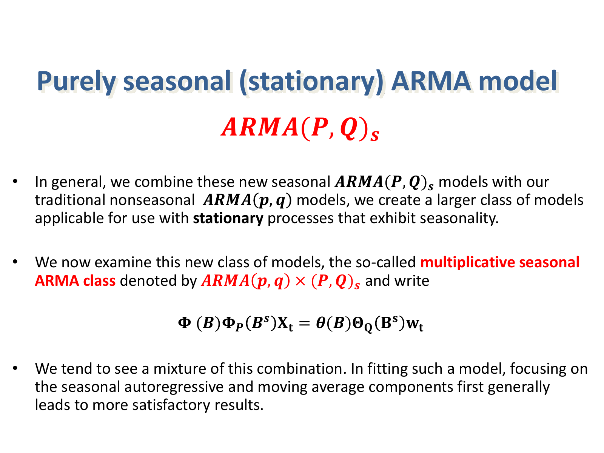
Class 9-2 ทวน multiplicative ด้วย simulation ก่อน แล้วเข้าข้อมูลจริงสองชุด โดยเริ่มจาก "โมเดลที่เราคิดในใจจากการดูกราฟเฉย ๆ" แล้วตรวจสอบ37 boardings จาก package TSA คือจำนวนผู้โดยสารขนส่งสาธารณะรายเดือนในเดนเวอร์ (ส่วนใหญ่รถบัสและ light rail) สิงหาคม 2000 ถึงมีนาคม 2006 รวม 68 เดือน ข้อมูลถูก log มาแล้ว โมเดลที่ได้จึงเป็นของ log X_t38 ข้อมูลเดิมน่าจะมีปัญหา non-constant variance
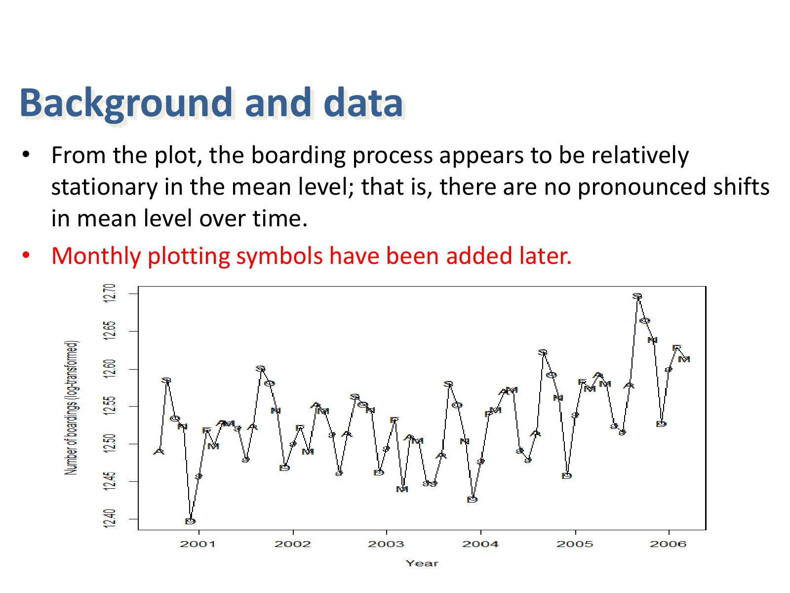
ระดับเฉลี่ยค่อนข้างคงที่ราว 12.5 (log scale) ไม่มีการเลื่อนระดับชัดเจน จึงไม่ต้อง difference ตัวอักษรเดือนที่ใส่ด้วย points(..., pch = as.vector(season(boardings))) ช่วยให้เห็นว่าเดือนเดียวกันมักอยู่ระดับใกล้กันทุกปี เพราะระดับเฉลี่ยคงที่ จึงใช้ ARMA(p,q)×(P,Q)ₛ ที่นิ่ง (ไม่มี d, D) และ s = 12 เพราะเป็นข้อมูลรายเดือน
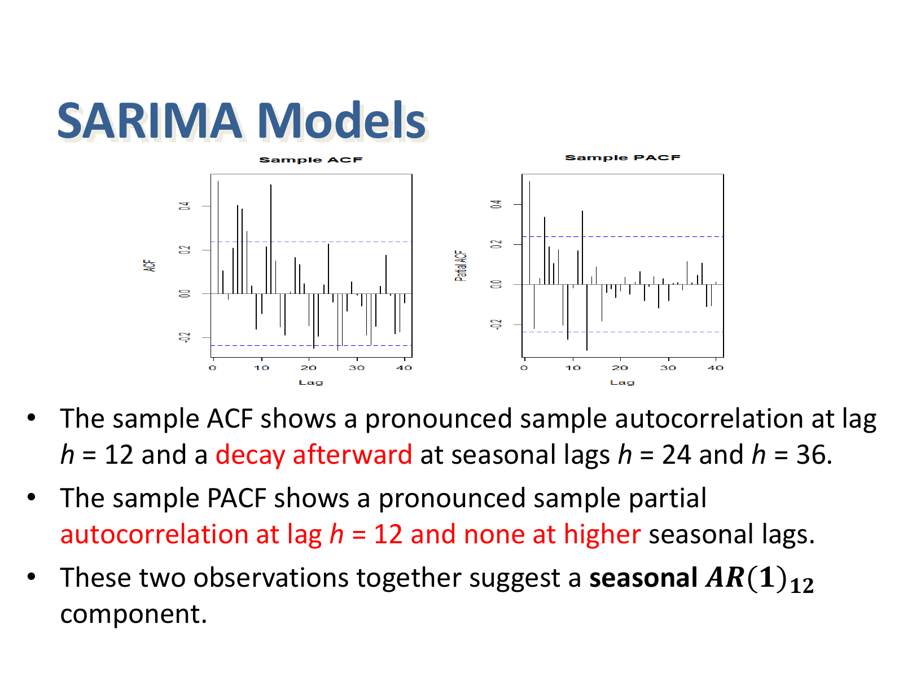
sample ACF ที่ lag 12, 24, 36 คือ 0.500, 0.229, 0.177 "ลงช้า ๆ" ส่วน sample PACF ที่ lag 12 คือ 0.368 และที่ lag 24 เหลือ 0.064 เส้นประคือ 2/√68 = 0.243 จึงทะลุที่ lag 12 เท่านั้น ACF tail off ตาม seasonal lag กับ PACF ตัดหลัง lag 12 คือรูปแบบของ AR(1)₁₂ ตามตารางในตอน 239
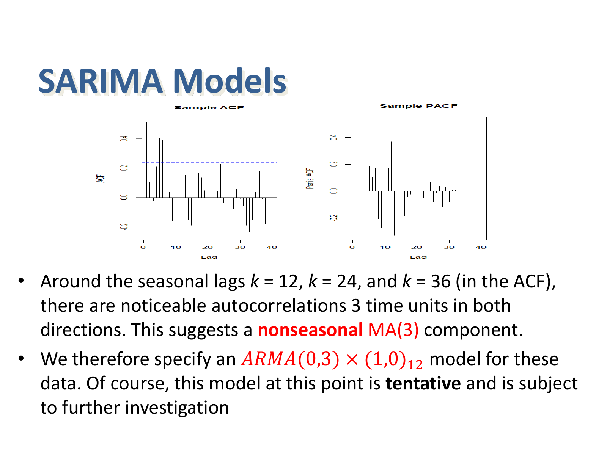
รอบ lag 12, 24, 36 ใน ACF มี autocorrelation 3 time units in both directions คือที่ lag 9–15 ก็ยังมีค่า ซึ่งเป็น "ตะเกียบ" แบบตอน 3 ที่กว้างสามช่อง และ ACF ช่วงต้นคือ 0.517, 0.106 สไลด์จึงเสนอ non-seasonal MA(3) ได้โมเดล ARMA(0,3)×(1,0)₁₂ ไม่ต้อง difference40 สไลด์ย้ำว่าโมเดลนี้ tentative
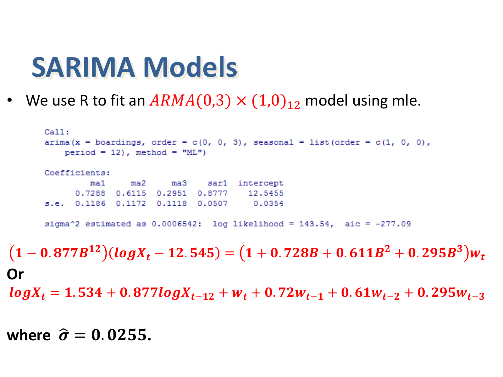
สไลด์แสดงทั้ง output และสมการสองรูปแบบ ทุกค่าในสมการมาจาก output โดยตรง ขั้นการแปลงอยู่ในกล่องข้างล่าง
arima(boardings, order = c(0,0,3), seasonal = list(order = c(1,0,0), period = 12), method = "ML"): ma1 = 0.7288, ma2 = 0.6115, ma3 = 0.2951, sar1 = 0.8777, intercept = 12.5455, σ² = 0.0006542
"sar1 = Φ" คือ Φ ใหญ่ ไม่ใช่ Θ ใหญ่42
\((1-0.877B^{12})(\log X_t-12.545)=(1+0.728B+0.611B^2+0.295B^3)w_t\)
ค่าคงที่ \(12.5455(1-0.8777)=1.534\) จึงได้ \(\log X_t=1.534+0.877\log X_{t-12}+w_t+0.72w_{t-1}+0.61w_{t-2}+0.295w_{t-3}\), \(\hat\sigma=\sqrt{0.0006542}=0.0255\)
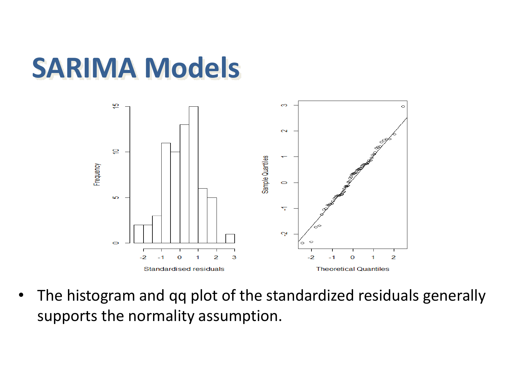
histogram ใกล้ระฆังคว่ำ และ QQ plot เรียงตามเส้น ยกเว้นปลายล่างสองจุด รันเองได้ Shapiro-Wilk p = 0.619 จึงยอมรับ normality
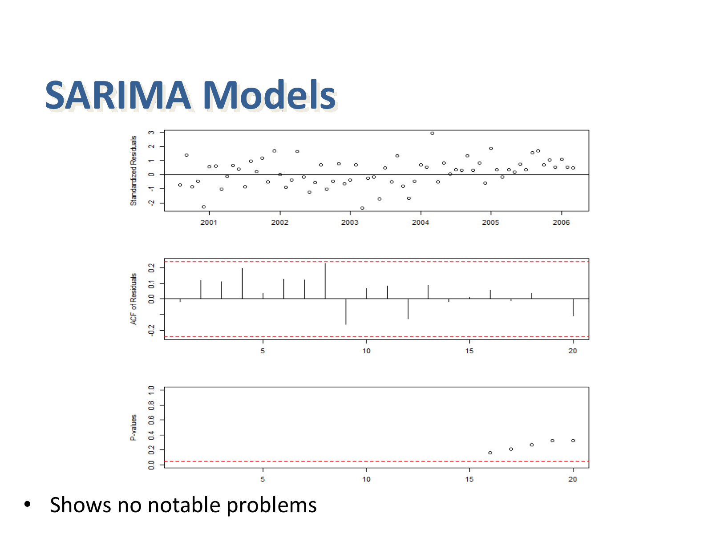
standardized residual อยู่ใน ±3 ACF ของ residual อยู่ในเส้นทุก lag และ p-value ของ Ljung-Box ในกราฟอยู่เหนือ 0.05 สไลด์และคลิปสรุปว่า "model appropriate"44 ถ้าคำนวณ Box.test เองด้วย fitdf = 4 ที่ H = 10 ได้ p = 0.031 ต่ำกว่า 0.05 ส่วน H = 20 ได้ 0.321 ความต่างมาจากจำนวน df ที่หักและ lag ที่เลือก ข้อมูล 68 ค่ากับพารามิเตอร์ 5 ตัวทำให้ผลไวต่อการตั้งค่า ในการรายงานควรระบุว่าใช้ H และ df เท่าใด
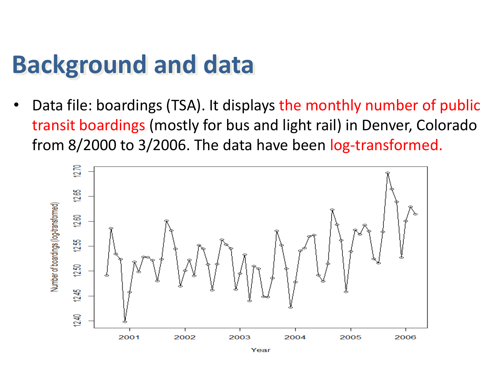
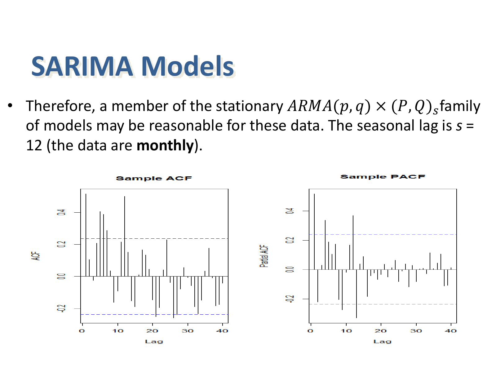
ชุดที่สองต้องใช้ทั้ง d และ D จึงเป็น SARIMA เต็มรูปแบบ milk คือผลผลิตนมรายเดือนของสหรัฐฯ (ล้านปอนด์) มกราคม 1994 ถึงธันวาคม 2005 รวม 144 เดือน มี trend ขาขึ้นและ seasonal ภายในปี Box-Cox บอกว่าไม่ต้องแปลง45
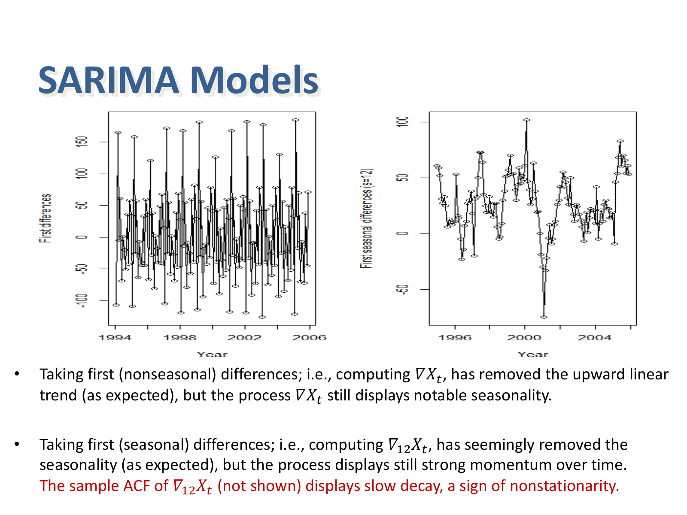
ผลต่างธรรมดา \(\nabla X_t\) ตัด trend ได้ แต่ยังเห็น seasonal ชัด ส่วนผลต่าง seasonal \(\nabla_{12}X_t\) ตัด seasonal ได้ แต่ยังเดินเป็นช่วงยาว ACF ของ \(\nabla_{12}X_t\) คือ 0.761, 0.599, 0.443 ลดช้า เป็นสัญญาณไม่นิ่ง จึงต้องใช้ทั้งสองอย่าง
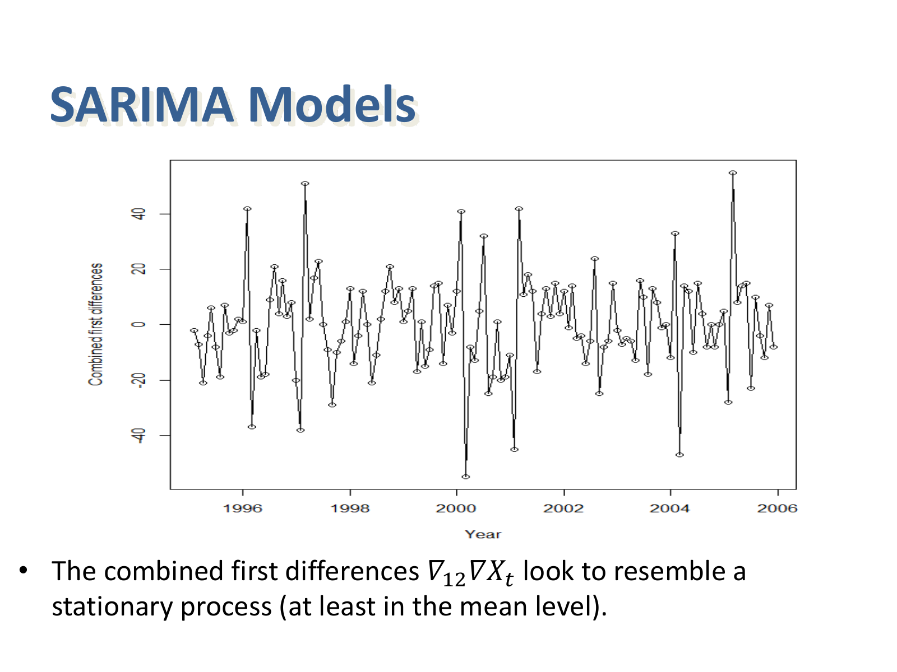
\(\nabla\nabla_{12}X_t=(1-B)(1-B^{12})X_t\) แกว่งรอบศูนย์ "ดูดีมากขึ้น" จึงใช้ d = 1, D = 146 ลำดับการ difference สลับกันได้47 เพราะการคูณพหุนามสลับที่ได้ การดูกราฟแบบนี้เป็น "subjective approach" ของสมัยก่อน ปัจจุบันใช้ auto.arima แนะนำ d, D48
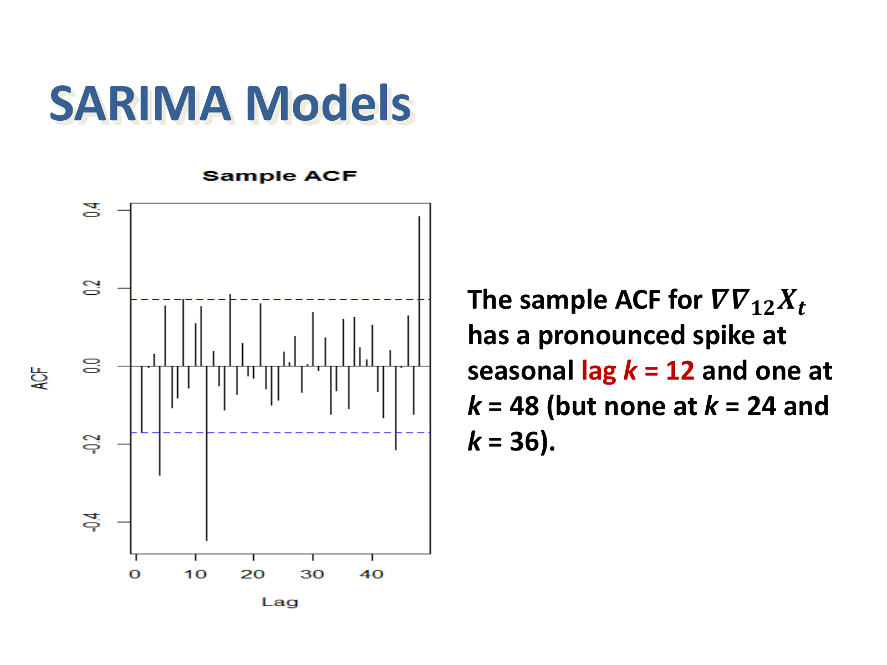
ACF มีแท่งใหญ่ที่ lag 12 (−0.448) และ lag 48 (0.385) แต่ lag 24, 36 เล็ก (−0.087, −0.109) เส้นประคือ 2/√131 = 0.175 ถ้า "ignore lag 48" จะเป็น MA(1)₁₂49
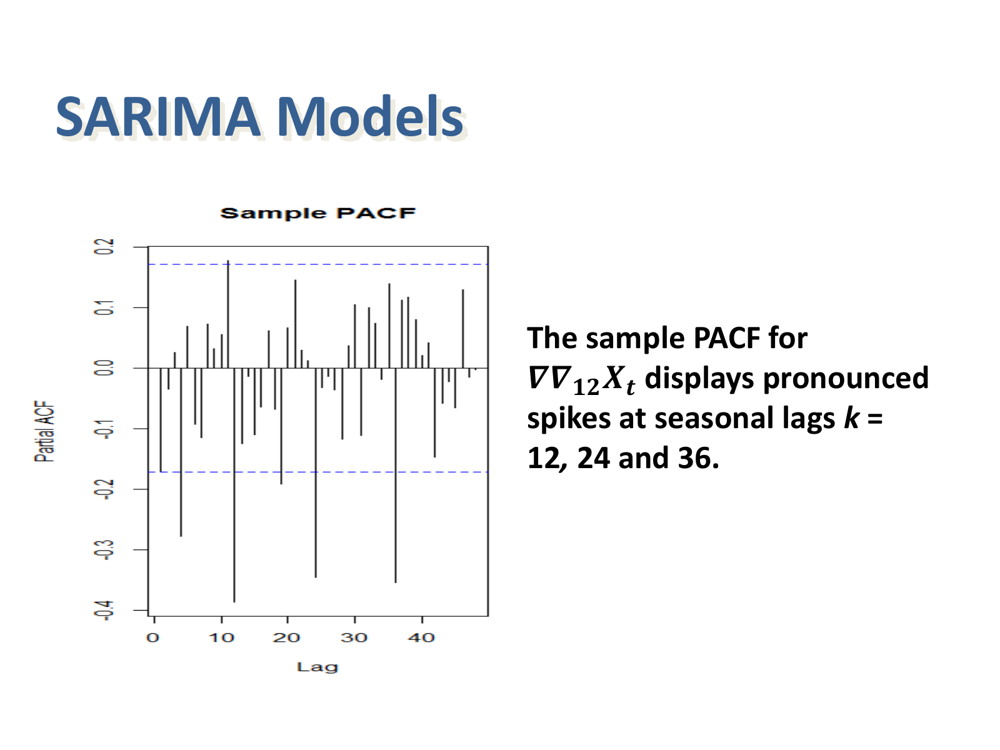
PACF ที่ lag 12, 24, 36 คือ −0.387, −0.346, −0.354 ทะลุเส้นทั้งสาม และไม่ได้ลดลงชัด ถ้าเน้น PACF จะเป็น AR(3)₁₂ (P = 3)50
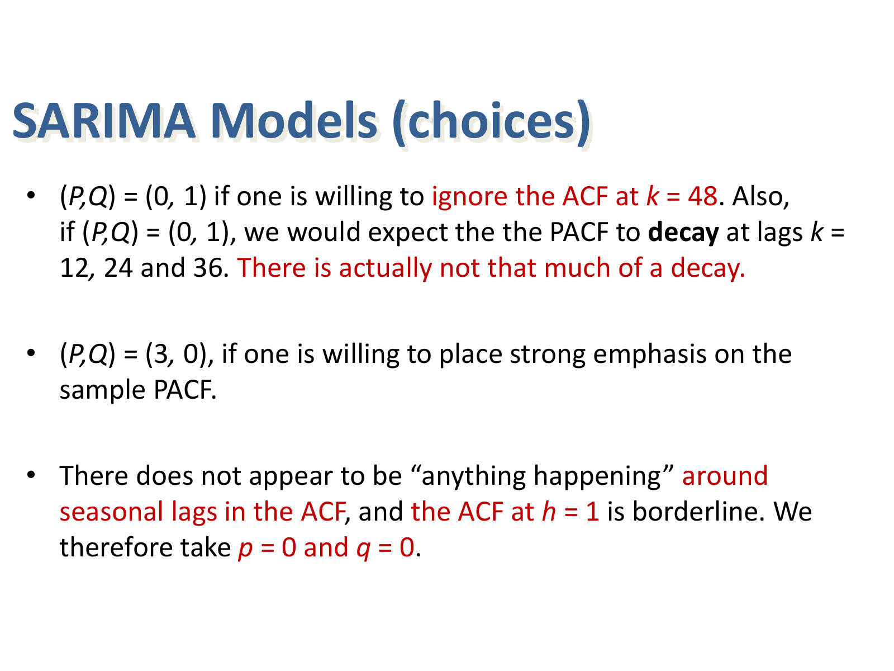
สไลด์ชั่งน้ำหนักสองทาง (P,Q) = (0,1) ถ้ายอมมองข้าม ACF ที่ lag 48 แต่ถ้าเป็น MA(1)₁₂ จริง PACF ควรลดลงตาม lag 12, 24, 36 ซึ่ง "there is actually not that much of a decay" ส่วน (P,Q) = (3,0) ถ้าเน้น PACF รอบ seasonal lag ใน ACF ไม่มีตะเกียบ และ ACF ที่ lag 1 (−0.171) อยู่ใกล้เส้น จึงใช้ p = q = 0
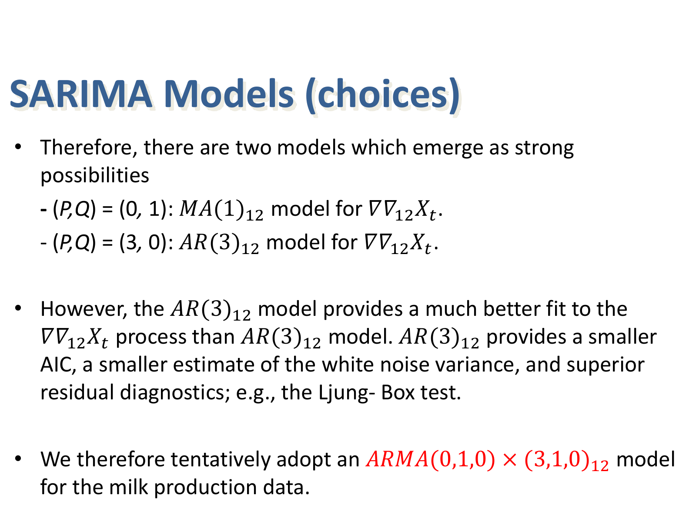
ในการทำงานจริงควรลองทั้งสองโมเดล51 สไลด์สรุปว่า AR(3)₁₂ ให้ AIC เล็กกว่า σ² เล็กกว่า และ diagnostic ดีกว่า (สไลด์พิมพ์ผิดเป็น "AR(3)₁₂ ... than AR(3)₁₂" ควรเป็น "than MA(1)₁₂") ตรวจด้วย R ได้ว่า ARIMA(0,1,0)×(3,1,0)₁₂ มี σ² = 121.4, aic = 1032.05 และ Ljung-Box p ที่ H = 12, 24, 30 = 0.165, 0.268, 0.297 ส่วน ARIMA(0,1,0)×(0,1,1)₁₂ มี sma1 = −0.954, σ² = 152.0, aic = 1058.13 และ Ljung-Box p = 0.003, 0.024, 0.090 ไม่ผ่าน จึงเลือก ARIMA(0,1,0)×(3,1,0)₁₂
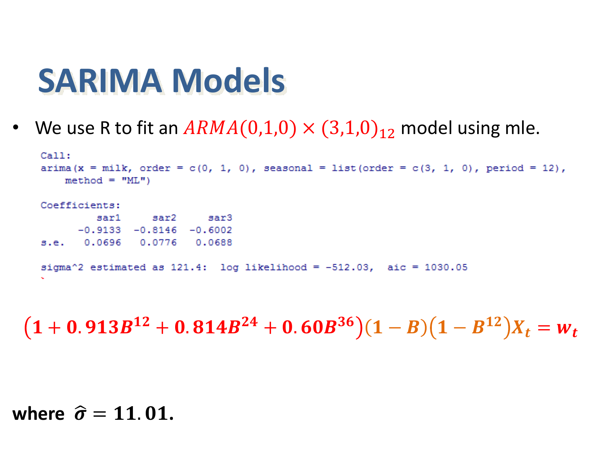
sar ทั้งสามตัวติดลบ จุดที่ต้องระวังที่สุดคือเครื่องหมายเมื่อนำเข้า seasonal AR operator ซึ่ง seasonal AR เป็น "1 ลบ Φ ใหญ่" เสมอ
sar1 = −0.9133, sar2 = −0.8146, sar3 = −0.6002, σ² = 121.4 ไม่มี intercept เพราะ d, D > 0
\(1-\Phi_1B^{12}-\Phi_2B^{24}-\Phi_3B^{36}=1-(-0.913)B^{12}-(-0.814)B^{24}-(-0.600)B^{36}\) ลบของค่าติดลบจึงกลายเป็นบวกทุกตัว53
\((1+0.913B^{12}+0.814B^{24}+0.60B^{36})(1-B)(1-B^{12})X_t=w_t\), \(\hat\sigma=\sqrt{121.4}=11.01\)
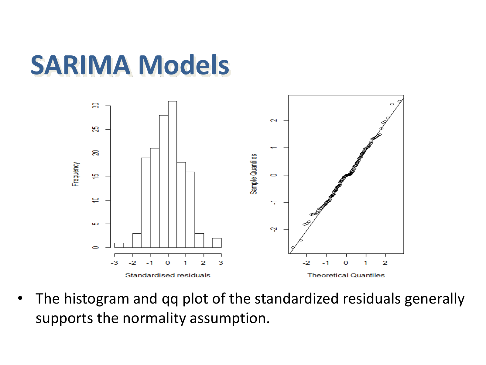
histogram และ QQ plot สนับสนุน normality (Shapiro p = 0.767 หลังตัด 13 ค่าแรกที่ใช้เริ่มต้น difference) tsdiag ใช้ omit.initial = T เพื่อตัด residual ช่วงต้นที่คำนวณได้ไม่สมบูรณ์ standardized residual อยู่ใน ±3 และ p-value ของ Ljung-Box ทุกจุดเกิน 0.0555 ข้อสังเกตจากการรันเพิ่ม: auto.arima(milk) เลือก ARIMA(1,0,0)(2,1,2)[12] with drift ซึ่งใช้ d = 0 ต่างจากที่เลือกด้วยตา โมเดลที่ใช้ d ต่างกันเทียบ AIC กันตรง ๆ ไม่ได้ เพราะ likelihood คำนวณบนข้อมูลคนละชุด ต้องเทียบด้วยความแม่นยำของการพยากรณ์ (Lesson 10)
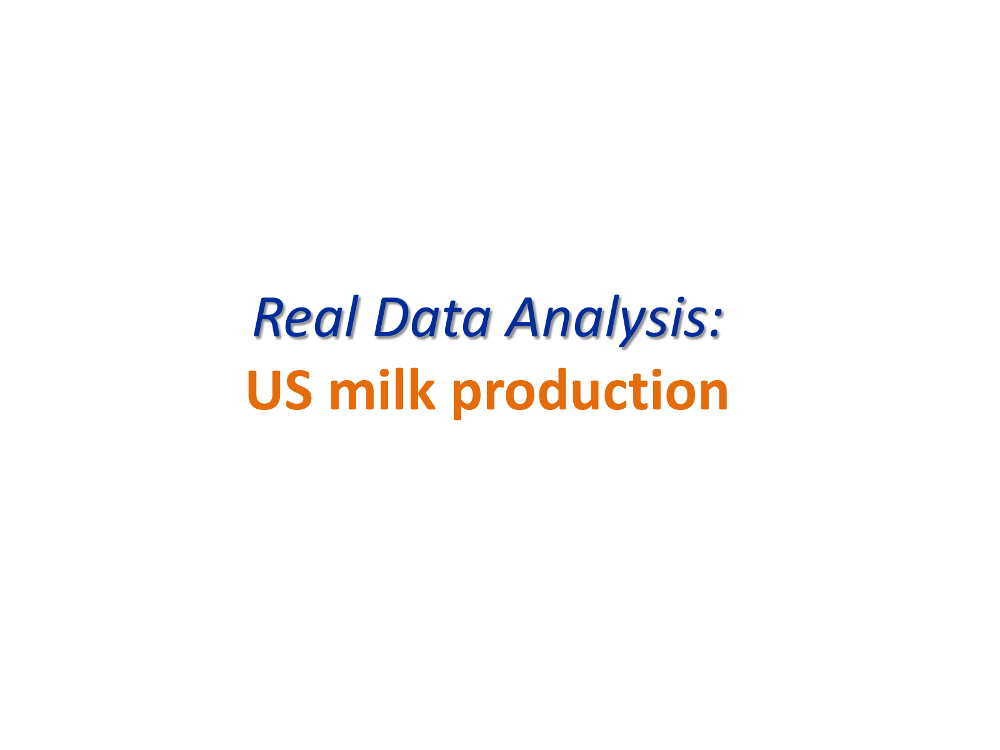
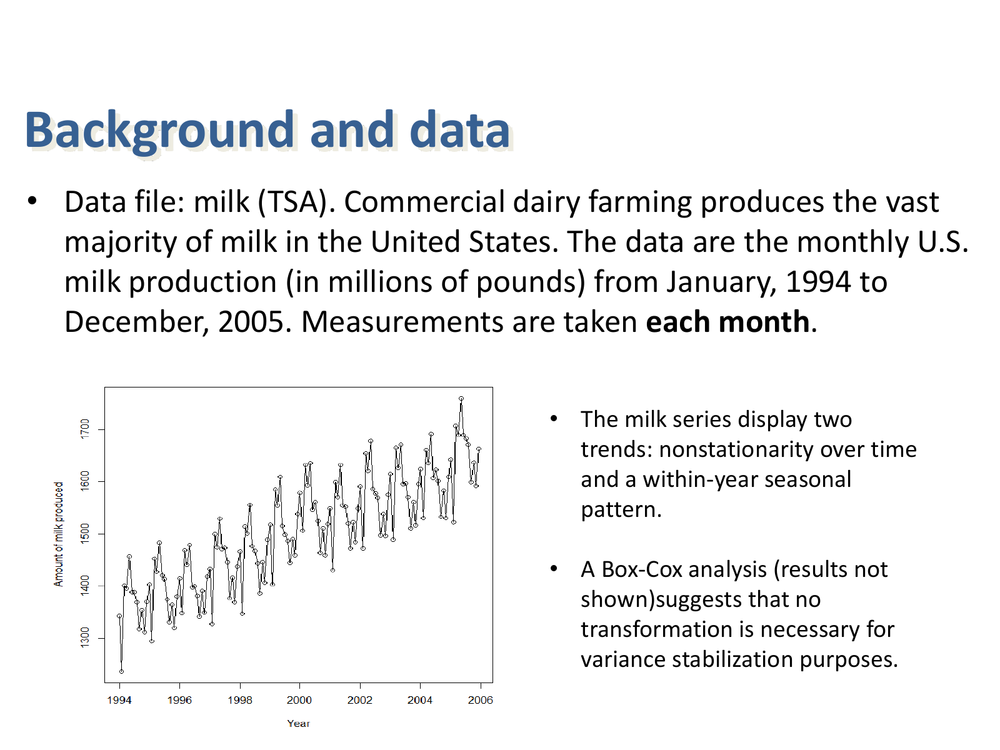
โค้ดส่วน seasonal อยู่ท้าย R_codes.txt ในโฟลเดอร์ CLASS 8 ข้อมูล boardings และ milk อยู่ใน package TSA ลองฝึกต่อในแบบฝึก Lesson 9 หรืออ่านต่อ Lesson 10
ตัวเลขยกในเนื้อหาชี้มาที่รายการนี้ แต่ละรายการระบุคลาสและนาทีของคลิป พร้อมถ้อยคำในคลิปเมื่อมี
| หน้า | เนื้อหา | อยู่ในตอน |
|---|---|---|
| 1–13 | Forecasting | etc — สอนใน Lesson 8 |
| 14–26 | ทำไมต้องมี seasonal ARIMA, MA(Q)ₛ, AR(P)ₛ | ตอน 1 |
| 27–29 | ARMA(P,Q)ₛ และตาราง ACF/PACF | ตอน 2 |
| 30–32 | Multiplicative seasonal ARMA | ตอน 3 |
| 33–41 | Denver boardings | ตอน 4 |
| 42–51 | US milk production | ตอน 5 |
| 52 | สรุป ARMA(P,Q)ₛ | ตอน 2 |
แหล่งอื่นที่ใช้: Class 8 ช่วง 1:24–2:13 (seasonal MA/AR เขียนมือ, ตอน 1–2), Class 9-1 ทั้งคลิป (full model, ตาราง, multiplicative, ตอน 1–3), Class 9-2 ช่วง 0:00–0:31 (simulation, boardings, milk, ตอน 3–5), ไฟล์ R_codes.txt (CLASS 8), quiz_7.pdf (CLASS 9), ข้อมูล boardings และ milk จาก package TSA